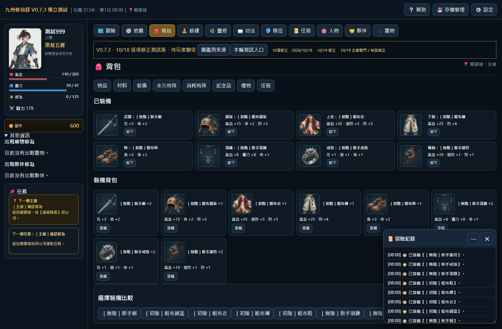
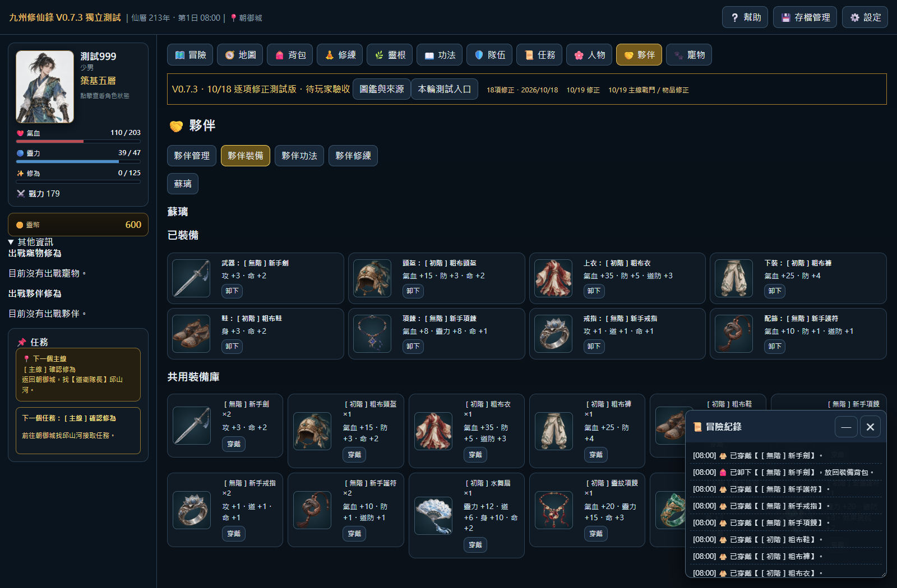
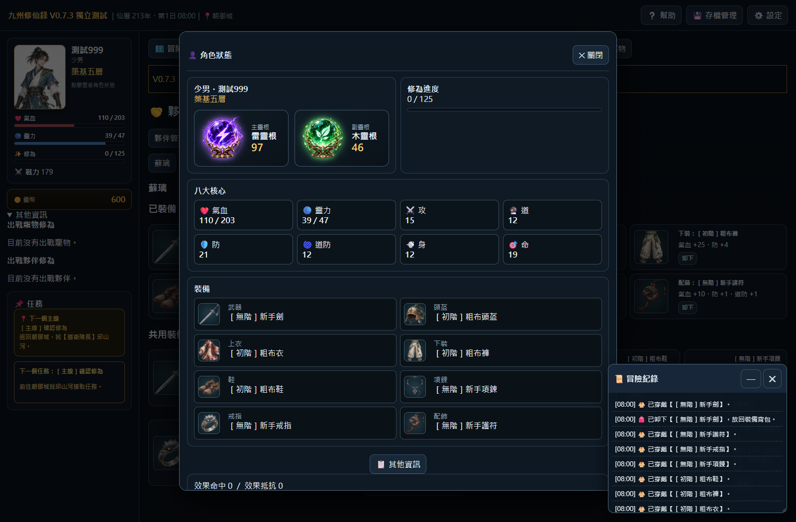

V0.7.3 裝備介面圖片修正
開啟最新測試遊戲 · 20261019-equipment-1
補齊已穿戴裝備、夥伴共用裝備庫與角色狀態的裝備圖片。圖片沿用同件物品的現有獨立美術，數值與穿卸操作保持原樣。空格維持無裝備，不顯示假物品圖。
六項實際介面測試均通過。測試結果 · 程式位置
- 玩家八格實際穿戴後均顯示對應圖片、數值與卸下按鈕
- 卸下後空格不殘留舊圖，背包物品與重新穿戴圖片同步
- 夥伴已穿戴與共用裝備庫均有圖片，維持裝備數值與操作
- 角色狀態裝備八格有圖片，空格不生成假物品
- 品質前綴共用同件裝備圖，重畫不改裝備數值或數量
- 裝備圖片真實載入，390寬度無卡片內圖片溢出
本次沒有套用新的長右血條。新血條另存為設計預覽，等待玩家確認；現行兩個BOSS介面模組逐字校驗一致。
玩家裝備八格圖片

夥伴裝備圖片

角色狀態裝備圖片
